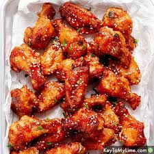

Recipe for cooking Wings

Buffalo Hot Wings
There's no need to go out or even order in when you're craving delicious, spicy hot wings.
Instead, next time you want your Buffalo wing fix, try this top-rated recipe.
Grab your favorite dipping sauce and celery sticks because this is about to be your new go-to hot wings recipe.
You'll never be disappointed by dry or not-hot-enough wings ever again!
Ingredients
- 100g of Wings
- Flour
- Butter, Hot Sauce, Pepper, and Garlic
- Oil
- Sour Cream
Steps
- Coat with flour: Coat the chicken wings with a mixture of flour,
paprika, cayenne pepper, and salt. Refrigerate coated wings for at least an hour.
- Make the sauce: In a saucepan on the stove, combine butter, hot sauce, pepper, and garlic.
Stir until butter is melted, then remove from heat and reserve for later.
- Fry the wings: Fry the chicken wings in a skillet filled with oil heated to 375 degrees F.
Remove the wings and place them on a paper-towel lined plate to remove the excess oil.
- Coat the wings: Drizzle the hot wings sauce over the fried wings or place
the hot wings in a bowl with the sauce and mix together until combined.